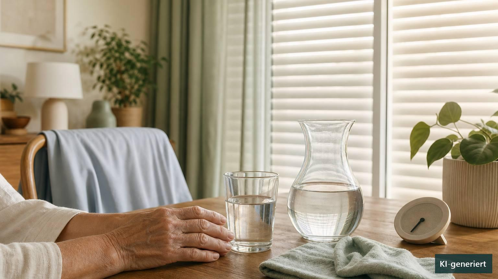

Gesund und sicher durch den Sommer
Hitze im Alter: früh planen, Warnzeichen erkennen
Hitze ist für viele ältere Menschen mehr als eine Frage des Wohlbefindens. Der Körper gibt Wärme im Alter häufig langsamer über die Haut ab, das Schwitzen kann später einsetzen und das Durstgefühl schwächer werden. Gleichzeitig erhöhen chronische Erkrankungen, eingeschränkte Beweglichkeit, soziale Isolation oder bestimmte Medikamente die Belastung. Aktuelle WHO-Empfehlungen aus dem Juni und Juli 2026 betonen deshalb, dass Hitzeschutz nicht erst beginnen sollte, wenn Schwindel oder Übelkeit auftreten. Ein vorbereiteter, überschaubarer Plan kann helfen, heiße Tage sicherer zu strukturieren – ohne Angst, aber mit klaren Grenzen der Selbsthilfe. ([gesund.bund.de](https://gesund.bund.de/hitze-pflegebeduerftigkeit))

Warum ältere Menschen Wärme oft schlechter ausgleichen
Damit die Körpertemperatur stabil bleibt, erweitert der Organismus unter anderem die Blutgefäße der Haut und produziert Schweiß. Im höheren Alter können diese Reaktionen vermindert oder verzögert sein. Hinzu kommt, dass Durst nicht immer zuverlässig signalisiert, wie viel Flüssigkeit benötigt wird. Wer in seiner Mobilität eingeschränkt ist, erreicht Getränke, kühle Räume oder eine Dusche möglicherweise nicht ohne Hilfe. Demenz und andere kognitive Einschränkungen können außerdem dazu führen, dass Hitze, unangemessen warme Kleidung oder erste Beschwerden nicht richtig wahrgenommen werden.
Besondere Vorsicht ist bei Herz-Kreislauf-, Lungen-, Nieren- und neurologischen Erkrankungen sowie bei Diabetes geboten. Hitze kann bestehende Beschwerden verstärken. Eine aktuelle globale systematische Übersicht und Metaanalyse mit Daten aus zahlreichen Klimazonen zeigt, dass sowohl höhere Temperaturen als auch Hitzewellen bei älteren Bevölkerungen mit mehr Erkrankungen und Todesfällen verbunden sind. Besonders ausgeprägt waren manche Risiken bei sehr alten Menschen. Die Ergebnisse beschreiben Zusammenhänge auf Bevölkerungsebene; sie können nicht vorhersagen, wie eine einzelne Person auf einen bestimmten heißen Tag reagiert. ([gesund.bund.de](https://gesund.bund.de/hitze-pflegebeduerftigkeit))
Ein persönlicher Hitzeplan beginnt vor dem heißen Tag
Sinnvoll ist eine kurze Vorbereitung, die zur Wohnung, zum Gesundheitszustand und zum Unterstützungsbedarf passt. Dazu gehört, Wetter- und Hitzewarnungen zu verfolgen und früh zu klären, welcher Raum am kühlsten bleibt. Tagsüber können außen liegende Rollläden, Jalousien oder Vorhänge geschlossen werden. Gelüftet wird bevorzugt dann, wenn es draußen tatsächlich kühler ist, meist nachts oder am frühen Morgen. Wärme erzeugende Geräte sollten nur genutzt werden, wenn sie gebraucht werden.
Lässt sich die Wohnung nicht ausreichend kühlen, kann ein mehrstündiger Aufenthalt in einem kühleren öffentlichen Gebäude oder bei Angehörigen entlasten. Wege dorthin sollten möglichst in den kühleren Tagesstunden stattfinden. Leichte, lockere Kleidung, lauwarme bis kühle Duschen, feuchte Tücher und das Benetzen der Haut können als angenehm empfunden werden. Anstrengende Hausarbeit, Gartenarbeit und längere Wege gehören nicht in die heißeste Tageszeit.
Für alleinlebende, gebrechliche oder kognitiv eingeschränkte Menschen ist eine feste Kontaktperson besonders wichtig. Ein kurzer Anruf reicht nicht immer aus: Bei hohem Risiko sollte geklärt werden, ob Getränke erreichbar sind, die Wohnung kühlbar ist und sich Verhalten oder Orientierung verändert haben. WHO und Gesundheitsbehörden sehen diese sozialen Rückfragen als wesentlichen Teil des Hitzeschutzes. ([who.int](https://www.who.int/news-room/questions-and-answers/item/heatwaves-how-to-stay-cool))
Trinken: regelmäßig anbieten, aber nicht pauschal verordnen
Bei nachlassendem Durstgefühl hilft es oft, Getränke sichtbar und griffbereit aufzustellen und über den Tag verteilt kleine Portionen anzubieten. Abwechslung kann das Trinken erleichtern, beispielsweise Wasser, ungesüßter Tee oder eine passende Saftschorle. Auch wasserreiches Obst, Gemüse oder Suppen können zur Flüssigkeitszufuhr beitragen. Alkohol ist bei Hitze ungünstig; große Mengen stark koffeinhaltiger oder sehr zuckerreicher Getränke sind ebenfalls keine gute Grundlage für den Flüssigkeitshaushalt.
Eine systematische Übersicht mit 19 Studien und insgesamt 978 akut erkrankten oder in Einrichtungen lebenden älteren Menschen fand Hinweise, dass verhaltensbezogene Maßnahmen wie Erinnern, häufigeres Anbieten und eine bessere Getränkeauswahl die Aufnahme erhöhen können. Nur zwei kleine Studien mit 165 Teilnehmenden konnten gemeinsam statistisch ausgewertet werden. Deshalb ist die genaue Wirkung unsicher und nicht ohne Weiteres auf selbstständig lebende ältere Menschen übertragbar. ([pmc.ncbi.nlm.nih.gov](https://pmc.ncbi.nlm.nih.gov/articles/PMC8537864/?utm_source=openai))
Wichtig: Eine pauschale Trinkmenge passt nicht für jeden Menschen. Bei Herzschwäche, fortgeschrittener Nierenerkrankung, Schluckstörungen oder einer ärztlich festgelegten Flüssigkeitsbegrenzung muss vor heißen Tagen geklärt werden, wie viel und was getrunken werden darf. Elektrolytgetränke, Salztabletten oder Nahrungsergänzungsmittel sollten nicht vorsorglich auf eigene Faust eingesetzt werden. Sie können bei bestimmten Erkrankungen oder Medikamenten ungeeignet sein.
Medikamente niemals selbstständig verändern
Einige Arzneimittel können bei Hitze bedeutsam werden, etwa weil sie die Flüssigkeitsausscheidung, das Durstgefühl, das Schwitzen, den Blutdruck, die Aufmerksamkeit oder die Temperaturregulation beeinflussen. Dazu können unter anderem entwässernde Mittel, bestimmte Blutdruckmedikamente, anticholinerge Wirkstoffe und einige Psychopharmaka gehören. Mehrere Medikamente können sich in ihren Effekten ergänzen. Auch Dehydrierung kann die Ausscheidung einzelner Wirkstoffe verändern.
Das bedeutet ausdrücklich nicht, dass ein Medikament an heißen Tagen weggelassen werden sollte. Plötzliches Absetzen kann gefährlich sein. Besser ist eine vorsorgliche Überprüfung durch Hausarztpraxis oder Apotheke: Welche Beschwerden sind relevant? Gibt es einen schriftlichen Plan für sehr heiße Tage? Muss eine verordnete Trinkbegrenzung angepasst werden? Wie werden Insulin, Wirkstoffpflaster, Inhalatoren oder andere temperaturempfindliche Produkte korrekt gelagert? Die CDC bezeichnet ihre Medikamentenhinweise als Expertenempfehlung und verlangt eine individuelle Nutzen-Risiko-Abwägung. ([cdc.gov](https://www.cdc.gov/heat-health/hcp/clinical-guidance/heat-and-medications-guidance-for-clinicians.html))
Frühe Beschwerden ernst nehmen
Müdigkeit, ungewöhnliche Schwäche, starker Durst, Kopfschmerzen, Schwindel, Übelkeit, Muskelkrämpfe, starkes Schwitzen oder eine kühle, feuchte Haut können zu einer Hitzeerschöpfung passen. Betroffene sollten in einen kühlen oder schattigen Raum begleitet werden. Überflüssige Kleidung wird gelockert oder entfernt; feuchte Tücher, Besprühen mit kühlem Wasser und Luftbewegung unterstützen die Abkühlung. Ist die Person vollständig wach, kann ein geeignetes Getränk angeboten werden – sofern keine medizinische Einschränkung dagegenspricht. Die Person sollte nicht allein bleiben.
Bessern sich die Beschwerden nicht rasch, nehmen sie zu oder bestehen Vorerkrankungen, ist ärztlicher Rat erforderlich. In Deutschland ist außerhalb der Sprechzeiten bei nicht lebensbedrohlichen Beschwerden der ärztliche Bereitschaftsdienst unter 116 117 erreichbar. Bewusstlosigkeit sollte unabhängig von einer zunächst vermuteten Ursache über den Notruf 112 abgeklärt werden. ([gesund.bund.de](https://gesund.bund.de/hitze-und-gesundheit))
Welche Rolle kann Osteopathie spielen?
Osteopathie ist keine Behandlung gegen Überhitzung, Flüssigkeitsmangel oder einen Hitzschlag. Akute hitzebedingte Beschwerden benötigen Kühlung, Überwachung und gegebenenfalls sofortige medizinische Hilfe. Eine osteopathische Untersuchung darf diese Schritte weder verzögern noch ersetzen.
Nach heißen Nächten berichten manche Menschen über schlechten Schlaf, allgemeine Anspannung oder muskuläre Beschwerden. Wenn ernsthafte Ursachen ausgeschlossen sind und der Kreislauf stabil ist, kann eine vorsichtige, individuell abgestimmte osteopathische Behandlung ergänzend als angenehm empfunden werden. Eine spezifische vorbeugende oder heilende Wirkung bei Hitzerisiken ist jedoch nicht klinisch belegt. Im Mittelpunkt bleiben deshalb ein passender Hitzeplan, die medizinische Kontrolle relevanter Erkrankungen und Medikamente sowie verlässliche Unterstützung im Alltag.
Praktische Tipps für zu Hause
- Hitzewarnungen verfolgen und bereits am Vortag Getränke, kühle Räume und Unterstützung organisieren.
- Morgens und nachts lüften, tagsüber Sonne mit Rollläden, Jalousien oder Vorhängen fernhalten.
- Getränke sichtbar, erreichbar und in kleinen Portionen regelmäßig anbieten; individuelle Vorlieben berücksichtigen.
- Bei ärztlich begrenzter Trinkmenge vor einer Hitzeperiode einen persönlichen Trinkplan vereinbaren.
- Anstrengende Tätigkeiten und längere Wege in die kühleren Morgen- oder Abendstunden verlegen.
- Haut mit feuchten Tüchern, Sprühwasser oder einer kühlen Dusche entlasten; Kühlpacks immer in Stoff wickeln.
- Für alleinlebende oder pflegebedürftige Personen feste telefonische und möglichst persönliche Rückfragen vereinbaren.
- Medikamente nicht selbstständig absetzen oder dosieren; Lagerung und Hitzeregeln mit Praxis oder Apotheke klären.
Wann medizinische Hilfe wichtig ist
- Verwirrtheit, auffällige Unruhe, Koordinationsstörungen oder eine plötzliche deutliche Wesensveränderung.
- Bewusstlosigkeit, Krampfanfall oder fehlende normale Atmung: sofort 112 wählen und Erste Hilfe leisten.
- Sehr hohe Körpertemperatur, heiße Haut, schnelles Herzklopfen oder schnelle beziehungsweise erschwerte Atmung.
- Keine deutliche Besserung trotz Aufenthalt im Kühlen, Abkühlung und – sofern erlaubt – Flüssigkeitsaufnahme.
- Anhaltendes Erbrechen oder die Unfähigkeit, sicher zu trinken.
- Kollaps beziehungsweise Ohnmacht, auch wenn sich die Person im Liegen zunächst erholt.
- Neue Brustschmerzen, ausgeprägte Atemnot, Lähmungszeichen oder Sprachstörungen.
- Bei älteren, chronisch kranken oder pflegebedürftigen Menschen grundsätzlich eine niedrige Schwelle zur ärztlichen Abklärung wählen.